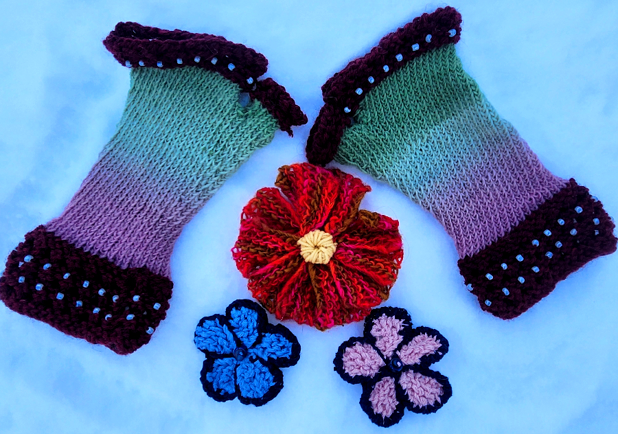

Folk Heart Baskets
Charming folk art heart baskets, perfect for Valentine's Day gifts or decorations. Made with natural fibers and traditional patterns.
FREE embroidery of loved ones' initials or important dates
Perfect for the week before Valentine's Day!

Yellow Bear with Scarf
Adorable hand-knit yellow bear wearing a cozy scarf. A perfect cuddly companion for Valentine's Day or any special occasion.
FREE embroidery available for initials or special dates
Features: Soft natural fibers, detailed scarf, embroidered face
Makes a heartfelt personalized gift

Dragon Potholder Series
Mythical dragon-inspired potholders featuring scale patterns, wing designs, and fiery color schemes. Each dragon has unique characteristics and colors.
Features: Thick natural fiber construction, functional heat protection, beautiful detailed embroidery
Perfect for: Fantasy kitchen decor, cosplay props, or magical gifts
Materials: Natural fibers with metallic embroidery accents

D&D Dice Bags
Hand-sewn dice bags perfect for your favorite nerd! Each bag includes a set of dice and features fantasy-themed designs.
Includes: Hand-sewn bag + matching dice set
Designs: Various fantasy themes, colors, and patterns available
The perfect gift for tabletop gaming enthusiasts!


Beaded Flower Barrett
Beautiful flower barrett featuring intricate floral designs with glass seed beads. Hover over the image to see both front and back views!
Features: Secure clip, detailed floral embroidery with beads, comfortable wear
Perfect for: Fantasy costumes, everyday wear, or special events
Materials: Natural fibers with bead and embroidery details

Artistic Arrangement
An artistic arrangement showcasing beaded fingerless gloves and matching flower barretts. The watermelon color scheme is refreshing and unique.
Includes: Beaded fingerless gloves + coordinating flower barrett
Features: Glass seed beads, floral embroidery, complementary colors
Perfect for: Coordinated fantasy outfits or statement accessories
Dust Sprites
Adorable dust sprites inspired by Studio Ghibli films. These fluffy black creatures with big eyes are perfect for fans of Japanese animation.
Features: Fluffy texture, embroidered eyes, whimsical design
Perfect for: Ghibli fans, cute desk decorations, or magical gifts
Materials: Soft yarn with detailed embroidery

Blue Owl Hat
Enchanting blue owl hat featuring detailed owl face patterns. This whimsical hat brings a touch of magic to any outfit.
Features: Owl face design, cozy fit, natural fiber construction
Perfect for: Fantasy events, cold weather, or owl enthusiasts
Materials: Wool blend with intricate colorwork
Simple Flower Barretts
Elegant flower barretts featuring beautiful embroidery without beads. These simpler designs offer a more subtle, classic look.
Features: Intricate embroidery, secure clip, comfortable wear
Perfect for: Everyday wear, subtle fantasy accents, or those who prefer bead-free accessories
Materials: Natural fibers with detailed embroidery only
Custom Fantasy Commissions
Looking for something specific for your fantasy event, cosplay, or magical home? I accept custom commissions for fantasy-themed creations.
Contact me to discuss your vision - whether it's a specific dragon design, zodiac piece, or unique fantasy accessory. All pieces are original designs made to order.
Turnaround time: Varies based on complexity (typically 2-4 weeks)
Rush orders: Available for last-minute needs - contact for details!
Materials: Natural fibers with special fantasy-themed embellishments
Ready to discuss a fantasy commission or have questions about Fantasy Ball pieces?
Contact Me for Fantasy Commissions← Back to Home